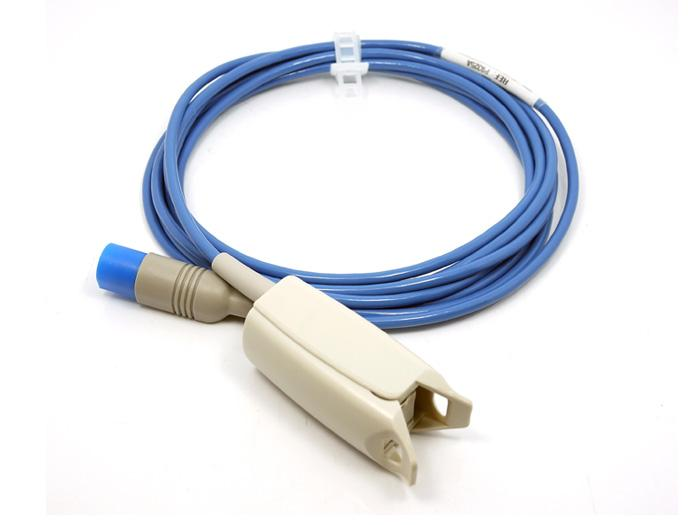
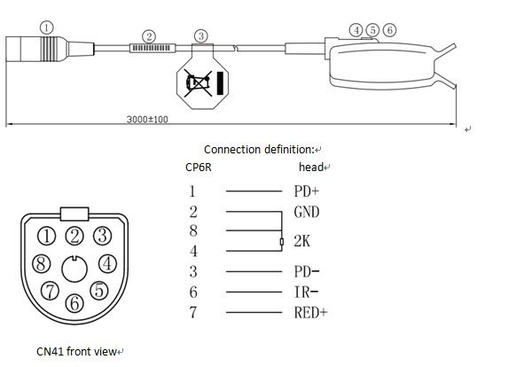

P9325A-Philips 8P adult finger clip blood oxygen probe
Model:P9325A-Philips 8P adult finger clip blood oxygen probe


| Sequence number | Material code | Name Specification | Number |
|---|---|---|---|
| 1 | VQB325A | Headless HP 8P blue 4.0 oxygen lines, TPU outside, braided screened |
1PCS |
| 2 | VFZ0002 | Product model heat-shrinkable tubing | 1PCS |
| 3 | VFZ0001 | Environment protection labels | 1PCS |
| 4 | VST0001 | Aiviter adult clips | 1PCS |
| 5 | VCP0002 | Imported LED | 1PCS |
| 6 | VCP0001 | Imported PD receiving tube | 1PCS |
| Sequence number | Test project | Test condition | Test result |
|---|---|---|---|
| 1 | length | The total length of probe is 3000mm | Plus and minus100 mm |
| 2 | Continuity test | 100% continuity | No shorted or open circuit ,poor connection |
| 3 | WitMan-machine test | Need man-machine Test, (healthy volunteers under normal temperature, Less than 1000 meters above sea level) |
Value of blood oxygen >95% |
| 4 | Simulate test | Simulator blood oxygen Testing point:97%,93%,90%,80% analog test point:200,160,80,70,60 |
Meet blood oxygen 90%~100% error ±2%, 70%~89% error ±3%, Less than 70% no definition, Pulse rate value ±2BPM. |
| 5 | Weak perfusion | When weak perfusion was 7%,test | Value of blood oxygen and pulse rate are displayed correctly |
Here is FAQ,users can list the Frequently Asked Questions here, example as below:
If you have questions or other better design ideas, you can go to our forum or wish to discuss.
Bug Tracker is the place you can publish any bugs you think you might have found during use. Please write down what you have to say, your answers will help us improve our products.
The Additional Idea is the place to write your project ideas about this product, or other usages you've found. Or you can write them on Projects page.
Here to buy P9325A-Philips 8P adult finger clip blood oxygen probe
Other related products and resources.
This documentation is licensed under the Creative Commons Attribution-ShareAlike License 3.0 Source code and libraries are licensed under GPL/LGPL, see source code files for details.
Links to external webpages which provide more application ideas, documents/datasheet or software libraries
Copyright (c) 2008-2016 Seeed Development Limited (www.seeedstudio.com / www.seeed.cc)